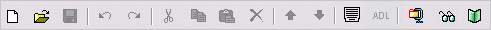
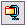
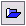

Toolbar
The RELOAD Editor has two main toolbars.
Main Toolbar

From left to right, the icons represent (with equivalent menu actions in brackets):
 New (File, New), creates a new Content Package (CP) or Metadata Record.
New (File, New), creates a new Content Package (CP) or Metadata Record.
 Open (File, Open), opens an existing CP or Metadata Record.
Open (File, Open), opens an existing CP or Metadata Record.
 Save (File, Save, Ctrl+S), to save the current CP or Metadata Record.
Save (File, Save, Ctrl+S), to save the current CP or Metadata Record.
 Undo (Edit, Undo, Ctrl+Z), to undo the last action.
Undo (Edit, Undo, Ctrl+Z), to undo the last action.
Redo (Edit, Redo, Ctrl+Shift+Z), to redo the last action.
 Cut (Edit, Cut, Ctrl+X), to cut the current selection.
Cut (Edit, Cut, Ctrl+X), to cut the current selection.
 Copy (Edit, Copy, Ctrl+C), to copy the current selection.
Copy (Edit, Copy, Ctrl+C), to copy the current selection.
 Paste (Edit, Paste, Ctrl+V), to paste the contents of the clipboard.
Paste (Edit, Paste, Ctrl+V), to paste the contents of the clipboard.
 Delete (Edit, Delete, del), to delete the current selection.
Delete (Edit, Delete, del), to delete the current selection.
 Move Up (Alt+Up), to move the selected file within the CP.
Move Up (Alt+Up), to move the selected file within the CP.
 Move Down (Alt+Down), to move the selected file within the CP.
Move Down (Alt+Down), to move the selected file within the CP.
Edit Metadata (Edit, Edit Metadata), to edit metadata for the selected manifest.
 Edit SCORM (Edit, Edit SCORM) properties of an Item.
Edit SCORM (Edit, Edit SCORM) properties of an Item.
 Make Content Package (File, Zip Content Package), to create a .zip CP.
 View File (View, View File), to view an individual file (via browser).
View File (View, View File), to view an individual file (via browser).
 Preview Content Package (View, Preview Content Package), previews the CP.
Preview Content Package (View, Preview Content Package), previews the CP.
Resource Pool Toolbar

From left to right, the icons represent (with equivalent menu actions in brackets):
 Import to Resource Pool
 Delete from Resource Pool
Delete from Resource Pool
 Delete from Resource Pool
Delete from Resource Pool
Refresh, refreshes the file list for the Resource Pool.
 View File, launches a browser window to allow viewing of an individual file.
View File, launches a browser window to allow viewing of an individual file.
You will also come across other icons in system menus. These will be explained as we encounter them.